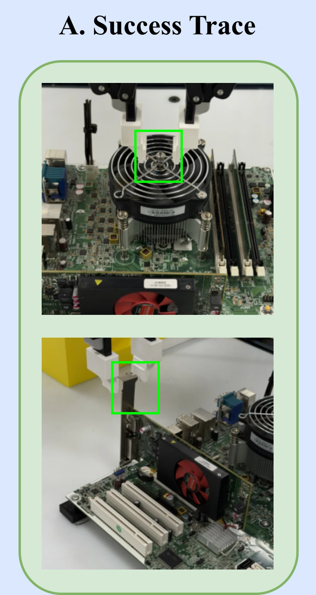
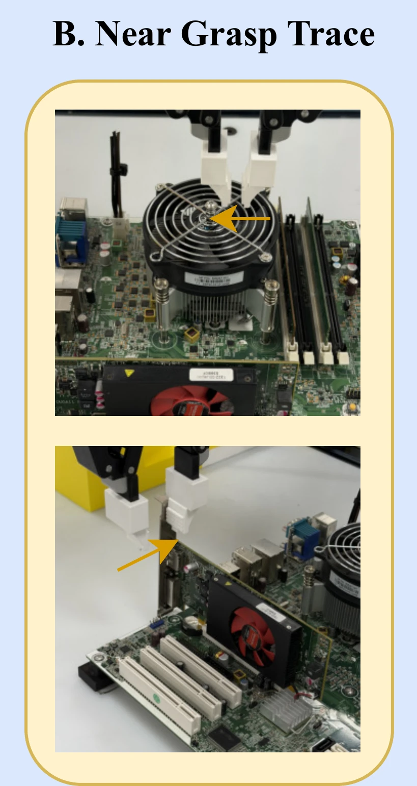
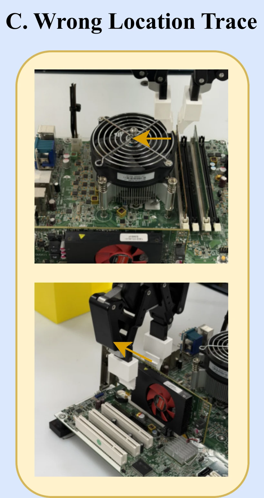
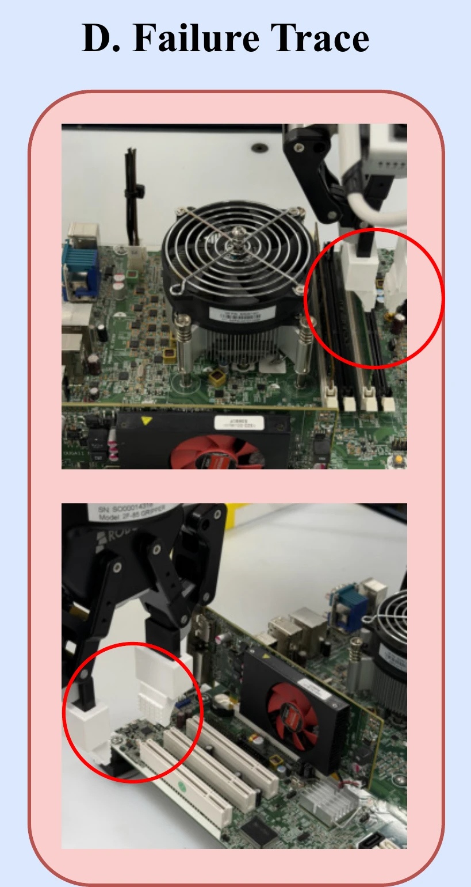
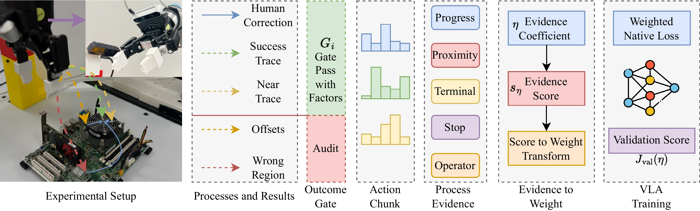

Outcome-only filtering
Keeps successes and corrections and drops everything else. A near miss teaches nothing, and every kept trace counts the same.
PACER post-trains a VLA policy offline on its own rollouts, human corrections and supplementary clean demonstrations, weighting every action chunk by how the attempt unfolded — not only by whether it succeeded.
teleoperated demonstrations for the initial policy
autonomous rollouts
plus ≤ human corrections per component, positions
components
/
held-out success: πθ0 → vanilla post-SFT → PACER
+ points over vanilla post-SFT
Motivation
A short narrated primer: why a pass/fail grade throws away most of what a robot’s practice — and a teacher’s corrections — can teach.
Abstract
Robotic disassembly presents a key challenge in end-of-life (EoL) product remanufacturing automation, where a robot must perceive and interpret product states with uncertainty, satisfy prerequisite sequences, execute precise, contact-rich manipulation, and recover from failed attempts. Recent vision-language-action (VLA) models offer greater flexibility; however, they are largely applied to tabletop and daily-life manipulation rather than industrial settings. Supervised fine-tuning provides a practical path for adaptation, but limited and costly disassembly data cannot capture the distribution shifts arising from changing environments and product uncertainties. Human corrections expose the policy’s own failure states, but the key challenge is how to turn a limited set of recovery trajectories into useful policy-improvement signals rather than treating them as ordinary demonstrations or coarse trial outcomes. Motivated by this, we introduce PACER, a Process-Aware Correction and Evidence Reweighting framework that preserves the native VLA training objective by converting correction trajectories and in-process robot evidence into weights or advantages. Using 70 human correction trajectories collected across seven positions, we evaluate PACER on real UR5e motherboard disassembly across five component classes and multiple configurations, achieving a -percentage-point success-rate improvement ( → / held-out trials) on robotic disassembly tasks compared with direct SFT.
The submitted text with one phrase changed: the success-rate gain is stated in percentage points, where the submission gave a percentage. The camera-ready abstract will replace it.
Idea
A supervised VLA’s rollouts are rarely a clean pass or fail. Some succeed (A), some stop just short of the target (B), some end in the wrong place (C), some fail outright (D). When a rollout goes wrong, an operator takes over and records a correction from that very state (E). What should each trace teach the next policy?




Keeps successes and corrections and drops everything else. A near miss teaches nothing, and every kept trace counts the same.
Learns an extra reward or value objective from the traces and requires repeated rollout-and-collect cycles on the robot.
Keeps every trace. Outcome and safety labels only decide what may be imitated (wrong-location endpoints count as failure labels); process evidence sets how much each action chunk counts in the unchanged VLA loss.
Method
PACER changes only how much each training row counts. The VLA backbone, its action head and its training objective stay exactly as they are. Select a step to find it in the figure.

The policy’s own attempts. Successes and near misses show which of its action chunks carried it towards the target.
Weight By process evidence. Wrong-location and wrong-region rollouts are gated to zero weight and kept for audit.
Recoveries an operator records from the state where a rollout went wrong. They teach what demonstrations cannot: how to get back from the policy’s own mistakes.
Weight By process evidence, with the floor fcorr = .
Complete demonstrations, recorded only for task phases the supervised policy does not yet succeed in, under a coverage rule fixed before collection. They supply the nominal start-to-target path it has not learned there. They are separate from the initial supervised demonstrations, which are not replayed.
Weight By process evidence, with the higher floor fclean = , which anchors that path so reweighting cannot wash it out.
Neither human-recorded source suffices alone: the clean-only and correction-only baselines reach / and / held-out successes. PACER, which weights all three sources, reaches /.
Row weight
gi is the eligibility gate, sη the process score, centered by the stratum median b and scale σ; f is the role floor and α the role multiplier. The clip keeps every weight between zero and wmax.
Weighted native loss
The policy’s own per-horizon action loss ℓact, reweighted and normalized; the mask m suppresses horizons after an unsafe transition or an invalid chunk.
Validation score
A component-balanced mean of row-level validation scores vj. It ranks the candidate configurations after training; the policy is never optimized against it.
Explainer
Illustrative traces, split into action chunks. Choose one of the predeclared configurations and switch the gate to see each chunk’s evidence turn into a weight.
Results
held-out trials per method: configurations × trials for each of the components, none of them seen during post-training.
Overall success per method. Baselines in neutral tones, PACER in teal.
Success rate per component, with Wilson intervals.
Videos
Muted loops that play while on screen; each clip is marked with its playback speed. Slots fill in as clips are recorded.
Code
One repository, two layers, MIT-licensed.
PACER_Framework/
Robot- and VLA-agnostic: row schema, evidence functions, eligibility gates, η-weighted views, validation and adapter hooks.
pacer/ + scripts/
Data collection, rollout and correction helpers, action-chunk compilation, and weighting and validation helpers.
git clone --single-branch https://github.com/ChangChrisLiu/PACER.git
cd PACER/PACER_Framework
python -m pip install -e '.[dev]'
python -m pacer_framework.check_setup
python examples/end_to_end_demo.pyScope
Cite